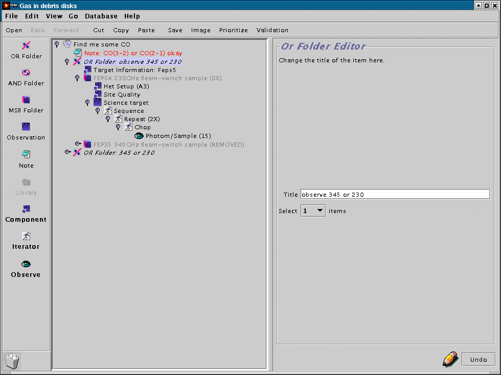

For example, look at the example below of a Science Program containing three MSBs - focus on the location of the two Site Quality components:
What does this mean? The first Site Quality component is on the same level of indentation, and therefore the same level of branching, as the MSBs. If that was the only Site Quality component present it would apply to all MSBs in the Science Program. As it is, the first MSB has a site quality inside it (technically: within its scope). So the first MSB will be scheduled using the criteria of the Site Quality component inside it, and the second and third MSBs will use the first Site Quality component since they lack one of their own. The technical term for this behaviour is "inheritance" for those familiar with it already.
Start with a science program which contains a template MSB with a blank target component (for example, a template MSB you have retrieved from the SCUBA library). Your catalog file should be of the format:
PKS0106 01 08 38.771 + 01 35 00.32 RJ 3C84 03 19 48.160 + 41 30 42.10 RJ 3C120 04 33 11.096 + 05 21 15.62 RJ PKS0438 04 40 17.180 - 43 33 08.60 RJThe catalog format is not blank space sensitive - sourceplot and JCMT catalog files will work as is, provided they do not contain planets or objects with orbital elements.
Under the edit menu, there is an option called "Replicate from catalog". Choose this action:

A file selector window will pop up which allows you to choose the location of the catalog file. Once you have done this, the OT will contact our site and after a short delay will pop up a new science programme window containing multiple MSBs. So if you had an MSB with one blank target component and a catalog file with 12 sources, you will get back a science programme with 12 MSBs, whose target components have been filled in using the information from your catalog.
Of course you may have to tweak the MSBs further, such as giving them more informative titles and tweaking the number of integrations on each source.

The scheduling constraints component allows you to:

This MSB is identical to the one described in the main tutorial except that it contains an extra item, the offset iterator. The offset iterator (like the chop iterator) allows you to specify one or more telescope positions as offsets from your science base position. You have two choices - you can enter arbitrary positions by hand, or you can ask it to create a grid for you in a fixed pattern.
For example, to create a 1x3 grid whose points are separated by 120 arcseconds centered on the base co-ordinates:

The initial and subsequent offsets from the base position are then displayed:

You can also specify a rotation for the grid by entering a PA - below I have entered 114 as the rotation. Note that the list will show the absolute grid offsets: to see the rotated offsets, hold down the "Display Rotated Offsets" button.

As with the chop iterator, you can visualise the positions by plotting your source in the position editor and then clicking on the offset iterator (see The position editor). This is how the 1x3 120 arcsecond grid with a 114 rotation displays with NGC891 as the target:

You can see the rotated offset positions (labeled 0, 1 and 2) lined along the edge of the galaxy. As with the chop positions, you can click on the "Drag" button and re-position the offsets at arbitrary points - the values in the offset iterator will automatically update to reflect the new placements. You will want to do this if you wish to map a source in a non-linear fashion.
Finally, there is a button on the offset iterator labeled "Set Spacing from Scan Area". This is in the cases where you have a scan map rather than a jiggle map inside your offset iterator. Press this button to use individual scan maps as tiles for mapping a much larger area. Note: It is generally a good idea to break an observation down so that a particular scan lasts for about half an hour; this is because if there is a major technical fault in the middle of a scan it is likely that the whole scan will be lost. So doing three 30-minute scan maps is better than doing one 90-minute one.
An OR folder can contain N items, and you can set the "Select" counter on the OR folder to indicate that you'd like any subset of size M to be observed. For example, if you wanted to try to detect the CO line in an object, but were not concerned in which transition (either 3-2 or 2-1), one could use a top level OR folder which contained a target information component and two MSBs as shown below. The use should set the "Select" counter of the OR folder to 1 to indicate that just 1 of the MSBs should be executed (not both).

Another application of OR folders is managing available telescope time for projects with a large number of potential targets. Suppose an observer wants to observe from a sample of 40 potential targets. Further suppose that some of the objects will require follow up observations towards the end of a semester and telescope time is somewhat limited (i.e. not enough to observe them all once and follow up the interesting ones). One solution would be to put the 40 MSBs for the sample into an OR folder, then set the "select" switch to, say, 10 objects. This will mean that no more than 10 objects will be observed from the sample. This can be used to ensure that all of the telescope does not get used up in making first observations, and that some time will be left over for follow up observations. This kind of programme management can involve the observer, in conjunction with the support astronomer, dynamically altering the programme in the light of past observations, results of data reduction and available telescope time.
AND folders enable similar observations to be grouped together, and to ensure that observations within the same group are more likely to get observed than those from a different group. In the example below, AND folders are used to indicate that the observer would prefer to end up with observations A and B or X and Y rather than A and X and A and Y. Note, that the order of observations, and which get done will still depend on project priority, source availability and weather. If the observer absolutely needs two targets observed to get any meaningful scientific result, they should go in the same MSB rather than in an AND folder - do not forget MSBs are allowed to contain multiple targets.